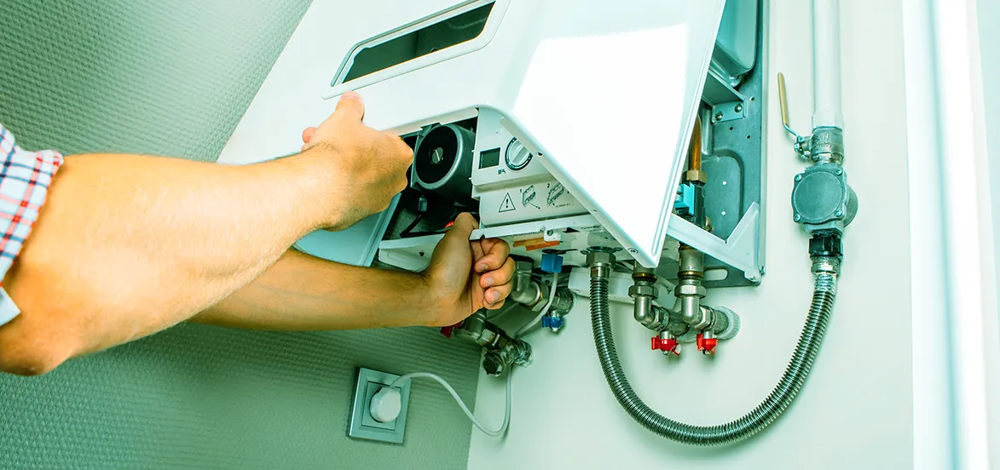

Warning Signs That There is Trouble with Your Water Heater

Many of the homeowners take water heaters for granted until they suddenly stop working. That means a slowdown of the water heater is due to an overload of too many showers, laundry, etc. Indeed, you will not be able to find the exact condition of the water heater at any given time. But you can judge its situation when you use it multiple times a day.
In short, there are very rare chances your water heater will stop working without giving any of the warning signs. But, if you want your water heater to work efficiently, you must know some of the warning signs that indicate calling for water heater repair services in Riverside. However, if you ignore those signs, you have to replace them, costing you more than repair.
What Causes A Trouble In A Water Heater?
Before we dive into the top warning signs that indicate your water heater needs repair, it is best to understand the components of your water heater. If you talk about a traditional water heater, it comes with a water storage tank surrounded by a protective lining. In the middle, a pipe encloses the burner that heats the cold water. However, the configuration is different for both electric and gas water heaters. In every water heater, there is an anode rod that attracts corrosive particles so that life of the heater will be long-lasting.
If you look at the water heater's normal life, it lasts for around 10 to 15 years. Some factors can cause hot water to go out. They are: -
- Metal tanks corrode or leak with time
- Anode rods get used up over time
- The heating element of the water heater breaks or stops working.
Warning Signs Of Water Heater Malfunctioning
If you want your water heater to remain in good condition, you have to recognize the signs when it is in trouble. It will help you call water heater repair in Riverside and get it repaired on time so that less damage is done. Keeping this in mind, let's discuss some of the water heater warning signs:
1. Water Leaking From The Heating Tank
Water leak from the water heater is one of the most significant signs that show your water heater will fail soon. The sign is water dripping from the water heater tank or pooling under the unit. In some of the cases, pipes also drip water.
In the above cases, it is possible that the heater valves are loose or connections are loose. You can replace or tighten all these components, as they are very easy fixes. But if the tank is leaking, you have to call the water heater replacement services in Riverside to replace the water heater.
2. Fluctuation In Water Temperature
If you notice a fluctuation in the water temperature, there is undoubtedly something wrong with your water heater. That means the hot water temperature keeps changing even if you haven't made any changes.
This usually occurs due to the accumulation of mineral deposits around the water heater's components. Call a water heater repair service in Riverside as soon as you notice a fluctuation in the water temperature.
3. Taps Or Knocking Sounds
While switching on a water heater, if you hear a tap or knocks coming from the water heater, there is a good chance of sediment build-up. These sediments create tiny tears in the metal that cause leaks in the water heater and diminish its life.
Here you have a chance to save your appliance by draining it, and thankfully it is very easy to do. But these sounds don't disappear, so it is wise to call a professional for water heater clean up.
4. Run Out Of Hot Water Quickly
If you don't flush your water heater regularly or your water has a high volume of sediments, they will surely settle in the tank. This accumulated sediment leaves less space for hot water, because of which you run out of hot water very fast. This is the symptom that indicates your water heater is malfunctioning.
However, if this situation remains unattended for long, you will not be able to flush the sediment out of the unit, which may end up with clogged and corroded valves. Then you have to repair your unit, so call a water heater repair professional in Riverside as soon as possible for the best result.
5. Cloudy Water With An Unpleasant Smell
At times, you notice cloudy water from the hot water taps, which comes with a strange odor. However, the change in the texture of water and smell is due to mineral deposits in the water heater, which indicates water heater repair so that there is no further damage.
Moreover, the strange smell from the water is also a sign of bacterial infection developing within the tank. You need to fix this problem immediately as the water can be dangerous for use.
6. Reduced Water Flow
Changes in water flow or pressure show a build-up of scale or sediment in the water heater. Moreover, there are some issues with the plumbing that connects the water heater to various locations in your house. This is undoubtedly not a warning sign that you will ignore and think to handle later on as sediment will get worse and leave you without hot water in between the chilly winter.
For this, you can drain the tank to flush all the sediment on your own. Apart from that, you can also call a plumber to inspect your pipes and fix any drainage issues affecting the water flow pressure.
So, don't ignore such issues and schedule an appointment with water heater repair and replacement professionals in Riverside.
7. Age Of The Water Heater
If your water heater is too old, then be vigilant. Most water heater companies paste a label on the water heater, which includes the manufacturing date. If it's missing, search for the brand name and unit serial number to find the manufacturing date.
If your water heater has passed around 10 to 15 years, it's time to replace it as everything lasts for a designed period of time. At first, when you buy a new water heater, it costs you more, but later it will help you save money and take less space as they are energy efficient.
8. Lukewarm Water
There are various factors because your water heater will offer lukewarm water instead of hot water. For example, if you have changed the water heater's settings to low mode and it is too cold outside, the water heater will surely give lukewarm water. But if none of these factors is present, it becomes mandatory to call water heater repair services in Riverside.
The Bottom Line
So, these are some of the top warning signs that indicate your water heater needs repair. Regular professional inspections and water heater maintenance on your own can do a lot to preserve the functionality and efficiency of your water heater.
If you don't want to go for the do-it-yourself approach, water heater repair experts in Riverside will fulfill your requirements with perfection. For more information or the best water heater repair company, you may contact EZ Heat and Air professionals 24/7.